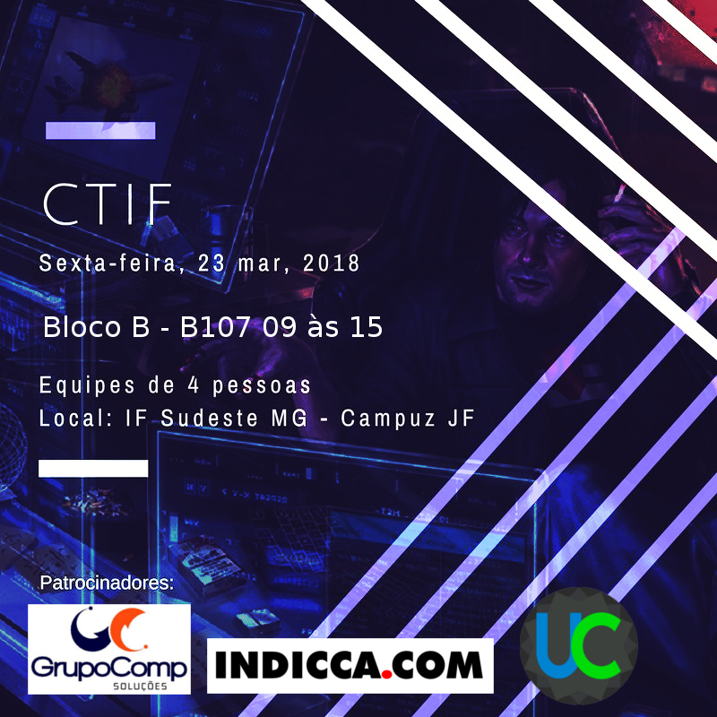
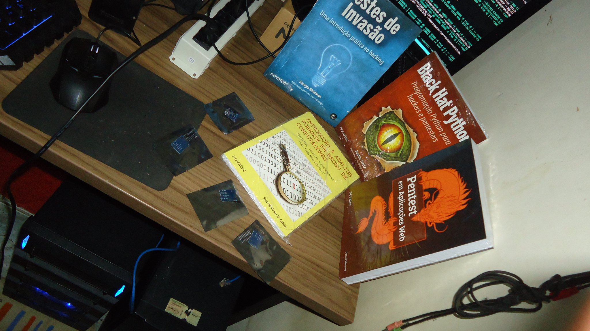
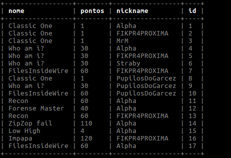
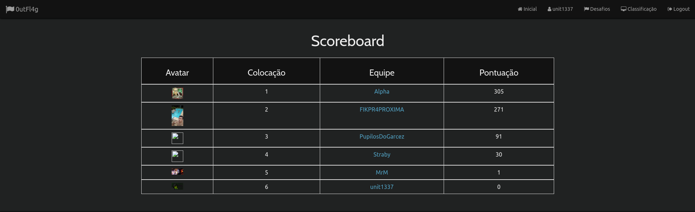
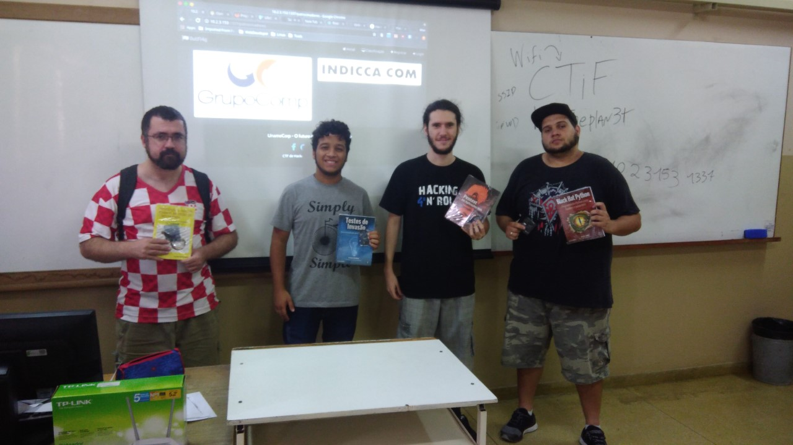

0utFl4g 5 Edicao - Bastidores
19 May 2018
Evento
O evento foi realizado no IFET no dia 23/03/2018, teve um total de 20 participantes resultando em 5 equipes. Foi o maior número de participantes que nós já tivemos competindo. Esse evento também foi o que tivemos uma melhor infraestrutura contando com servidor cedido pela Instituição e o emprego de Containers Docker.
A quinta edição também contou com patrocinadores, sendo então a primeira edição com patrocinio o que resultou na primeira edição com premiação para a equipe que ficasse em primeiro colado. A premiação alcançou aproximadamente R$ 300,00 em itens.
Segue a relação de prêmios:
- Teste de Invasão (Georgia Weidman)
- Pentest em aplicações Web Daniel Moren)
- BlackHat Python (Justin Seitz )
- Introdução a Análise Forense em redes de computadoresRicardo K. M. G.)
- 4x DigitalSpark ( RubberDuck Project )

Preparação
Os preparativos para a quinta edição de CTF foram da nossa forma habitual, nossa equipe se reúne em um fim de semana, temos um brainstorm, analisamos nossas ideias de challenges descartamos umas e melhoramos outras e então documentamos. Definimos uma deadline para preparar tudo. Passamos os dias seguintes subindo challenges pro nosso repositório secreto e documentamos técnicamente cada challenge.
Challenges
O total de challenges elaboradas foram 17, contudo devido ao tempo curto de duração do evento e falta de demanda só 12 foram liberadas. Será abordado um overview sobre as challenges liberadas logo abaixo.
Forense:
- Forense Master(40):
- Autor: r3bel
- Descrição: Foi criado um arquivo de 512Mb, formatado com FAT e então populamos essa partição com arquivos diversos e nonsense. No final das contas foi criado um diretório com vários subdiretórios.O arquivo da flag estava oculto no meio dos diretórios, uma vez localizado através de utilitários como o comando find, era necessário utilizar uma ferramenta de stenografia como o steghide e então extrair a flag. ### Web:
- PHPrague(80):
- Autor: 7r0n
- Descrição:Consistia no upload de um webshell em através de um formulário para subir imagens Nós misturamos um pouco de web com forense aqui, existiam dois vetores para entrar no servidor, um deles era através do ssh
- ZipZop fail(110):
- Autor: 7r0n
- Descrição: Essa challenge foi baseada na vulnerabilidade do Whatsapp que envolve o Local Storage, porém como um hint. Para resolver era necessário acessar o servidor, então ele iria encaminhar os dados que seriam armazenados no LocalStorage da sua máquina, esses dados consistiam em uma chave RSA privada encodada em base64, essa chave seria utilizada para decriptar a flag, que estava em SessionStorage.
- Papers:
- https://www.tra.gov.ae/userfiles/assets/wl33NGjeGX8.pdf
Misc:
- Classic One(1):
- Autor:7r0n
- Descrição: Essa challenge é uma referência ao termo HACK THE PLANET, o jogador precisaria apenas completar a frase.
- Low High(4)
- Autor: r3bel
- Descrição: Essa challenge é uma referência ao termo Cybe"Low Life High Tech". O jogador precisaria apenas completar a frase.
- Who am I(30):
- Autor: r3bel
- Descrição: Essa challenge é uma referência à definição de daemons segundo o perso"Elliot" do seriado Mr Robot. O jogador precisaria saber qual era o termo que a definição estava definindo.
Network:
- FilesInsideWire(60):
- Autor: r3bel
- Descrição: Essa challenge consistia em uma amostra de tráfego FTP. No tráfego um usuário chamado lizabeth se conecta via FTP em um servidor e lista os arquivos e baixa um arquivo. Na lista dos arquivos do servidor FTP pode ser visto a flag. O jogador precisaria se conectar no mesmo servidor FTP com as credenciais interceptadas e realizar o download do arquivo correto, dentro desse arquivo ele encontraria a flag.
- Recon(60):
- Autor: r3bel
- Descrição: Essa challenge exigia dos jogadores o emprego de portscanners e captura de banner de serviços. Foi deixado um programa em uma determinada porta que simulava um banner. Uma vez conectados nessa porta, utilizando o netcat por exemplo, o servidor te entregaria a flag com o banner.
PPC(Professional Programming and Coding):
- Impapa(120):
- Autor:r3bel/7r0n
- Descrição: Essa challenge foi feita pelo r3bel e foi refatorada pelo 7r0n. Ela necessida que os jogadores saibam programação de sockets para comunicar com o servidor na porta que é informada no desafio. O desafio é bem simples, o servidor te dispara um número e você precisa responder ao servidor se esse número é impar ou par, depois de um determinado número de acertos, o servidor te encaminha a flag.
Criptografia:
- Hey Cabron(80):
- Autor: r3bel
- Descrição: Foi criado uma cifra utilizando a criptografia Übchi, para resolver você só precisava realizar uma pesquisa sobre tipos de criptografias empregadas pela Alemanha nas grandes guerras mundiais. Depois de ter localizado a cifra, você ainda iria precisar da chave para descriptografar, a chave poderia ser encontrada realizando um bruteforce de acordo com os hints que foram fornecidos durante o campeonato.
Pwn:
- Roses are red and Micro$oft are Blue(150):
- Autor: r3bel
- Descrição: Nessa challenge foi criado uma VM que reproduz a falha ms17-010 da Microsoft. Para resolver você precisaria utilizar o exploit EtternalBlue. Uma vez com o exploit executado, você teria acesso administrativo no servidor, então iria encontrar a flag no diretório Documents do usuário user.
- Do you "manja"(70):
- Autor:7r0n
- Descrição:
Infraestrutura
Nesse evento conseguimos um servidor apenas, e dentre todas as edições que tivemos, essa foi a única edição que conseguimos de fato equipamento pela Instituição. Geralmente temos que subir tudo em nossos notebooks.
No servidor cedido pela Instituição, foi instalado um Debian e teve suas configurações hardenizadas. Foi implementado o Docker para subir os containers. Ao total foram 7 containers docker. Foi a primeira edição que utilizamos esse tipo de estrutura isolada em containers, e sinceramente funcionou melhor do que esperado. Foi tão tranquilo que a carga de consumo do host que usamos como servidor Docker não passou de 15% em nenhum momento do evento.
Como foram 7 challenges, eu atribui uma interface virtual no servidor para utilizar outro endereço IP para poder separar as challenges de networking. Assim os scans e coisas do tipo não iriam ficar bagunçados por detectar portas de outras challenges.
Além dos containers docker, elaboramos uma challenge em VM, contendo um sistema Windows 7 x64 com uma vulnereabilidade referente ms17-010. Essa teve alguns problemas para nós. A principio ficaria no mesmo computador que estaria rodando a plataforma, porém, na hora de subir ela nesse computador, tivemos um kernel panic que levou ao sistema travar, causando a primeira indisponibilidade por queda da plataforma. Não satisfeitos, testamos 3 minutos mais tarde realizar o mesmo procedimento e então crashamos novamente causando a segunda e ultima indisponibilidade da plataforma tirando aqueles problemas de mau contato do cabo de rede. Como dizia o físico, é insanidade tentar obter um resultado diferente tentando a mesma coisa. Então eu subi a VM no meu próprio notebook. A VM teve que ser migrada horas mais tarde devidoeu ter que voltar ao meu trabalhoas 13h. Foi divertido ter que migrar isso, compactar a imagem usando aquele software primitivo zip que demorou oito mil ciclos computacionais e se mostrou ser menos eficiente que o gunzip. Depois disso, presenciei o primeiro erro do comando cp de falar que não pode copiar o arquivo porque é muito grande pra um pendrive(mesmo o pendrive tendo mais capacidade, provavelmente alguma coisa referente ao sistema de arquivos do pendrive, coisa da Microsoft e seus sistemas de arquivos medonhos), OK, então transferi pela rede para uma máquina do laboratório de informática e a migração foi realizada com sucesso.
Essa infraestrutura foi interessante pra nós, pois empregar o Docker para as challenges vai fazer com que mesmo com uma infraestrutura limitada possamos subir vários desafios em containers. Só não conseguimos por falta de tempo implementar um sistema de monitoração dos containers direto no host, passei a madrugada inteira antes do evento realizando testes porém não ficou algo válido para ser utilizado, então o monitoramento foi feito atráves dos utilitários do docker mesmo.
Running:
O desenrolar do evento foi tranquilo, ajudamos bastante os participantes com dicas e orientações. As equipes demonstraram um bom desempenho. Muitos participantes não tinham nenhuma experiência com CTF, inclusive a maioria estava rodando Windows. Isso foi até relativamente engraçado quando notei que uma das máquinas de um dos partipantes estava aplicando atualizações da Microsoft e deixou ele fora do jogo por uns 15~30 minutos.
O score estava disputado, chegando ter três equipes empatadas ao mesmo tempo, abaixo segue a ordem de resolução das challenges e as respecticas equipes:
Algo que vale ressaltar é que a challengeImpapa já foi ofertada em duas edições anteriores e nunca tinha sido resolvida e vinha sendo reciclada, temos então o FirstBlood pra equipe FIKPR4PROXIMA que matou essa challenge! 
A challenge mais insana e realistica não foi abatida,”Roses are red and Micro$oft are Blue”, é uma pena, eu queria muito ver alguém destruindo aquele Windows…
Posteriomente ao evento o 7r0n apresentou a writeup de todas as challenges ofertadas no campeonato com o intuito de compartilhar conhecimento com os participantes.
Patrocinadores
Gostaria de agradecer novamente nossos patrocinadores: Indicca.com e Grupocomp por acreditarem no nosso trabalho e terem contribuido com o evento.
Conclusão
A equipe vencedora foi a Alpha. A maioria dos integrantes da Alpha já jogou CTF, levaram então todos aqueles prêmios para casa. Parabéns Alpha!!
ScoreBoard final: 
Equipe Alpha: 
EOF